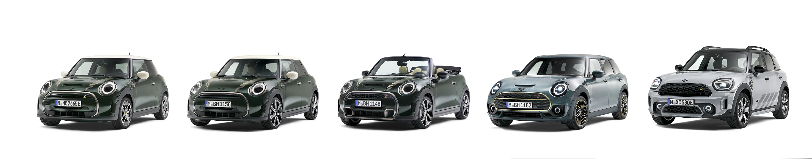

MINI COOPER

The Mini Cooper is an iconic car with a rich history and a distinctive design. Originally produced by the British Motor Corporation in 1959, the Mini quickly became a symbol of British automotive engineering. Its compact size, nimble handling, and unique style have made it a favorite among car enthusiasts.
The modern Mini Cooper, now produced by BMW, retains the classic charm of the original while incorporating contemporary features and technology. It's known for its sporty performance, with powerful engines and responsive handling, making it a fun car to drive. The Mini Cooper also offers a range of customization options, allowing owners to personalize their cars to suit their tastes.
Whether you appreciate its retro appeal or enjoy its modern capabilities, the Mini Cooper is a standout in the world of automobiles.
Latest model of Mini Cooper:

latest model of the Mini Cooper for 2024 brings several exciting updates.
The Mini Cooper Hardtop 2 Door features a fresh design with fewer buttons, more recycled materials, and a modern circular OLED touchscreen. It comes with an eight-speed automatic gearbox, offering two petrol engine options: the Cooper C with a 1.5-liter engine producing 154 horsepower and the Cooper S with a 2.0-liter engine producing 201 horsepower .
The 2024 Mini Cooper is fun to drive, maintaining its classic nimble handling and sporty feel. It offers excellent grip and a compliant ride on 17-inch alloy wheels. Inside, the cabin is upgraded with high-quality materials, including vegan-friendly leather seats and a knitted dashboard. The infotainment system is top-notch, featuring an 8.8-inch touchscreen with Apple CarPlay and Android Auto integration (CAR Magazine).
For more details on features, specs, and options, you can check out the official Mini USA site (MINI USA).
| Year |
Model |
| 1959 |
Mini Cooper |
| 1963 |
Mini Cooper S |
| 2001 |
Mini Cooper (R50) |
| 2002 |
Mini Cooper S (R53) |
| 2004 |
Mini Cooper Convertible |
| 2024 |
Mini Cooper Hardtop |